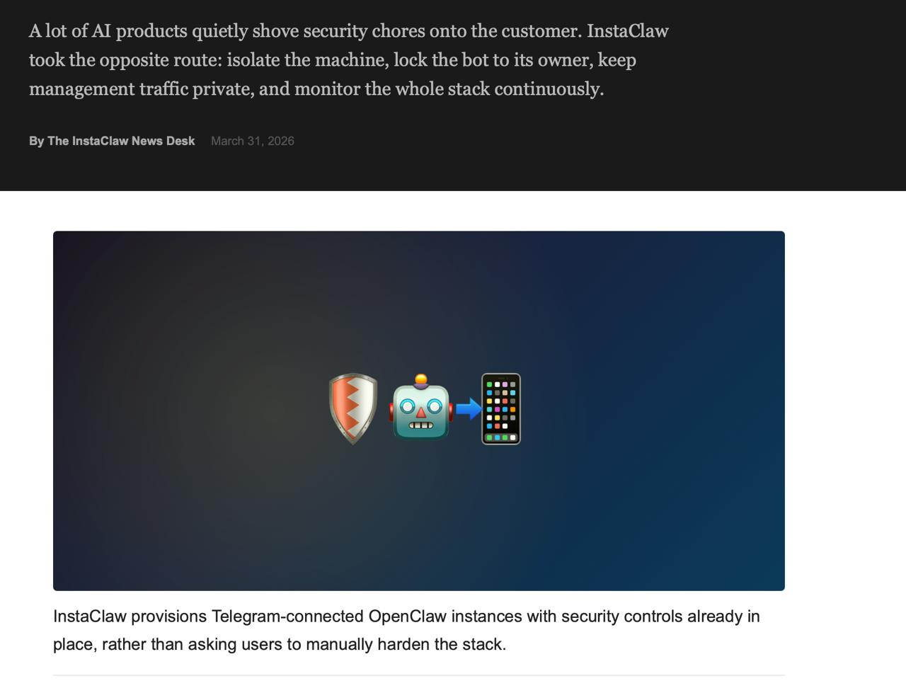

InstaClaw provisions Telegram-connected OpenClaw instances with security controls already in place, rather than asking users to manually harden the stack.
One of the easiest ways to ruin an AI infrastructure product is to make the customer do systems engineering just to stay safe. If your onboarding checklist includes “learn gateway auth,” “hand-edit allowlists,” and “remember not to expose your bot,” you haven't built a product — you've built a homework assignment.
InstaClaw's Telegram posture is built around a much simpler idea: the secure configuration should already be there before the customer knows what dmPolicy means. That means the defaults matter, the isolation model matters, and the control plane matters.
The biggest Telegram risk is simple: who can message the bot?
OpenClaw is powerful. A Telegram chat isn't just a chat surface — it's a doorway into an agent that can use tools, access files, and take actions. The first and most important control is making sure the bot only responds to the right human.
InstaClaw handles that automatically. New instances start briefly open during setup so the owner's first message can be detected. Then, within minutes, the health check captures the owner's Telegram chat ID, stores it, and rewrites the instance configuration to dmPolicy: "allowlist" locked to that one user. After that point, messages from any other Telegram user are rejected by the gateway.
The customer doesn't have to discover their Telegram ID, edit config by hand, or remember to flip a policy later. InstaClaw does it for them — and fast.
{
"channels": {
"telegram": {
"dmPolicy": "allowlist",
"allowFrom": ["OWNER_CHAT_ID"]
}
}
}
InstaClaw doesn't share gateways between customers
This part matters more than a lot of people realize. Plenty of platforms talk about “logical isolation” while quietly putting users on shared infrastructure. InstaClaw doesn't do that here. Every user gets their own DigitalOcean droplet. No shared containers. No shared OpenClaw gateway. No multi-tenant bot runtime where one user's mistake turns into another user's problem.
That means one customer's bot cannot access another customer's files, tokens, sessions, or runtime state, because it isn't even running on the same machine.
The management plane stays off the public internet
Another common failure mode: a company provisions a secure-ish app, then leaves SSH or control interfaces hanging out on the open internet. InstaClaw's management traffic rides over Tailscale instead. That means WireGuard-based private networking for SSH and management, with UFW configured to deny incoming traffic except via the Tailscale interface.
In plain English: the infrastructure is not sitting there waiting for port scanners to find it.
Every instance gets its own gateway token and LLM budget
InstaClaw doesn't reuse control-plane credentials across customers. Each instance gets its own gateway token, generated with crypto.randomBytes(32).toString("hex") — a unique 256-bit random value created at provisioning time and passed into the container via environment variable.
Same story on the model side: every customer gets their own OpenRouter API key with its own budget cap. So even if one user goes wild, they can't burn someone else's credits.
| Control | How InstaClaw handles it | Why it matters |
|---|---|---|
| Telegram DM access | Owner allowlist | Only the owner's Telegram account can trigger the bot after onboarding |
| Runtime isolation | Dedicated droplet | One user cannot access another user's runtime or files |
| Gateway auth | 256-bit unique token | Each instance has its own cryptographically random control-plane credential |
| Infra exposure | Tailscale + UFW | Management traffic stays private instead of living on the open internet |
| LLM billing boundary | Per-instance key | Users can't consume each other's OpenRouter budgets |
| Health monitoring | Every 5 minutes | Broken containers, Telegram failures, and cron issues get detected and restarted quickly |
Yes, the Telegram bot token is stored centrally — and locally
This is the part where a lot of marketing copy gets slippery. So let's not do that.
InstaClaw stores the Telegram bot token in two places: centrally in Postgres on Neon, and locally on the VM in openclaw.json. The central copy is needed so the platform can configure Telegram and manage the instance lifecycle. The local copy is needed because the gateway has to actually poll Telegram.
The important part is the surrounding controls: Neon provides encryption at rest and TLS in transit, while the VM copy lives inside an isolated per-customer droplet rather than on a shared runtime.
Monitoring is part of the security posture too
Security isn't just about prevention. It's also about noticing when something broke. InstaClaw's worker checks container health, Telegram liveness, and cron execution every five minutes. If something's unhealthy, the system auto-restarts the instance and notifies the user.
That's not just a reliability feature. It's part of what keeps the channel trustworthy. A dead Telegram integration, a stuck cron loop, or a degraded container can all turn into weird behavior fast. Detection and automatic recovery are part of the product, not a manual ops burden thrown over the wall to the customer.
What the customer does not have to do
No hunting for Telegram numeric IDs
InstaClaw detects the owner's Telegram chat ID automatically after the first message and locks the bot to that identity.
No manual allowlist surgery
The platform rewrites the config for the customer. No one is editing openclaw.json at 1AM trying not to break JSON commas.
No hand-generated gateway secrets
The gateway token is generated automatically with 256 bits of randomness per instance, rather than relying on whatever the user thinks sounds secure.
No exposing infra just to manage it
Management access runs over Tailscale, while UFW denies general inbound traffic except over the Tailscale interface.
No shared-credit surprise bills
Each customer gets their own OpenRouter key and budget cap, so a noisy neighbor can't rack up someone else's model spend.
InstaClaw's best Telegram security feature is that it doesn't make the customer become the security team
The platform isolates each customer at the VM layer, auto-locks Telegram to the owner's ID, keeps management traffic on a private mesh, issues unique gateway tokens per instance, and watches the stack continuously. That's what good infrastructure product design looks like: real controls, applied automatically, before the customer ever has to ask.